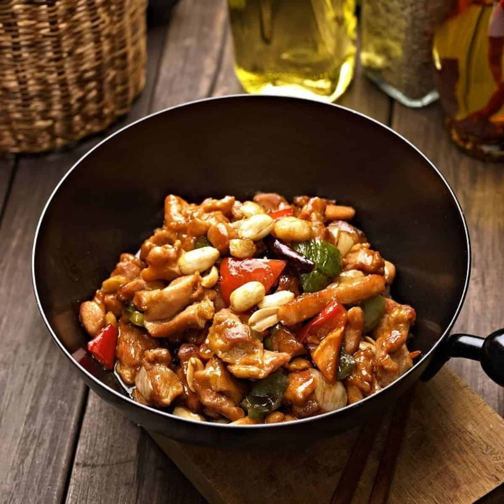

Kung Pao Chicken
What better way to start this list of popular Chinese foods than with one of China's most renowned and famous dishes: kung pao chicken. With stir-fried chicken, peanuts, vegetables, and chili peppers, this dish is sure to satisfy in its perfected simplicity.
Book a plate now? Sweet and Sour Pork
Sweet and sour pork is a staple dish well enjoyed. This dish is constructed around its main ingredient, deep-fried pork, which is stir-fried in a sweet and sour sauce, typically made of sugar, ketchup, white vinegar, and soy sauce. With stir-fried chicken, peanuts, vegetables, and chili peppers, this dish is sure to satisfy in its perfected simplicity.

Peking roast duck
Seasoned before being oven-roasted, our Peking duck is often served right out of the oven with its signature crisp and golden-brazed skin still intact. Served with the duck, bringing the dish together, is sides of spring onion, cucumber, and sweet bean sauce.

Mapo tofu
Our Mapo Tofu is the real deal when it comes to spicy and spice lovers alike, establishing itself as one of the most popular dishes in China. The tofu itself is set in hot and spicy sauce before being simmered with bean paste, beef, hot roasted chili oil, and a handful of the infamous tongue-numbing Sichuan peppercorns. If you believe spicy food is king, don’t pass up on any chance to try this peppery delight.

Chicken fried rice
Cooked in a wok or frying pan, this dish tosses fried rice with egg, vegetables, and chicken over steamy temperatures.